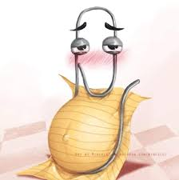

Personal auto hotkey script showcase 1
intro
This is the first entry in a multi part series where I dive into the auto hot key script that I use on all of my computers to enhance its core functionality! I believe that since computers are involved in so many parts of our lives, it is very important to become as proficient at using them as possible. so lets begin!
Frequently used scripts
;this sets 11ty to update
^F8::
sleep, 200
Send, npx @11ty/eleventy
sleep, 20
Send {Enter}
return
This command I use quite a bit during web development, it just writes out the command for my templating engine to render the code I wrote. I have a few others for git commits and other commonly used commands.
basic debugging
;this is a block comment generator for arduino
^F1::
sleep, 200
Send, int largedebug=1;
Send {Enter}
Send, int subdebug1=1;
Send {Enter}
Send, int singlevar=1;
Send {Enter}
sleep, 20
Send {Enter}
return
;this is a block comment generator for arduino
^F3::
sleep, 200
Send, if(largedebug){{}printf("\n---------------------
-------------------------------text here\n");{}}
sleep, 20
Send {Enter}
return
When more advanced debuggers are not available, I use these ahk based debugging blocks. In each function I put a debugging block as seen in the first code snippet, which sets three debug variables. Afterwards, as seen in the second code snippet, whenever I want to debug something, I use an ahk debug print statement. If I keep to using these statements, when I am finished debugging a function, I just go back to the debugging block at the start of the function and set the variable to zero. This disables print output and concludes debugging for that function.
Code navigation
; ;FIND SYNTAX uses ctrl and alt.
; ^!p::
; KeyWait, Control ; wait until Ctrl is released
; KeyWait, Alt ; wait until Alt is released
; Send ^f
; Send ^a
; Send {Del}
; SendRaw physicstaskcb(void *arg)
; Send {Enter}
; return
When I am working on large projects that start to become very difficult to traverse, I add a few of these code blocks to my ahk script which allow my to instantly ctrl+f search for a given keyword. I usually add references to functions that I frequently return to, such as a main loop or a main state machine. If you notice, there is a send ^a command in the block. This is because when ctrl f is pressed, the previous item searched for will show up. The ^a grabs the text of the previous item, and is followed with a delete command to clear the search field.
writing support
;SENDS RAW TEXT CONFIGURE THIS TO UR NEEDS.
^F9::
sleep, 200
SendRaw, osMutexAcquire(phymutex, 10);
sleep, 20
Send {Enter}
return
This handy little snippet just outputs whatever text you need at the moment. This is pretty useful if you are writing a report and need to frequently re-reference a string of text that you just dont quite feel like writing over and over again.
extended windows functionality
^!s:: ; Ctrl+Alt+S
Send {RButton}t
sleep, 10
Send, {Down}
sleep, 10
Send, {Down}
sleep, 10
Send {Enter}
sleep, 200
Send {Enter}
return
This snippet downloads any image you mouse is currently hovering over while browsing the web. Very handy for saving memes that you find funny online :)
desktop navigation
;NumpadSub::Run C:\Windows\System32\Taskmgr.exe ; Ctrl + Numpad - opens Task Manager
;NumpadAdd::Run windowsdefender: ; Ctrl + Numpad + opens Windows Security
^!NumpadSub::Run C:\Windows\System32\Taskmgr.exe ; Ctrl + Numpad - opens Task Manager
^!NumpadAdd::Run windowsdefender: ; Ctrl + Numpad + opens Windows Security
I make heavy usage of windows desktops in order to keep my workflow organized. I typically have my main task contained in a center desktop, and have supporting materials contained in the left and right desktops. Support materials are often google, reference materials, and more. If the task I am working on gets really complicated, I need two sets of these 3 desktop groups. So, I open up task manager in the center desktop in group 1, and snipping tool in group 2. Task manager and snipping tool can only have one instance running at a time. If you try to open TM when its already running and you you are in a different desktop, windows will simply move you over to the desktop in which TM is running. Same goes for snipping tool. By binding numberpad - and NP + to my mouse, I am able to quickly move to a different desktop group.
featured:
all posts:
- spongebob benadryl adventure
- kitty land the game
- How to master alphabetical organization (silly)
- Personal auto hotkey script showcase 1
- Intro to rss
- Personal auto hotkey script showcase 2
- Super duper doggy blaster the video game
- New art!
- Rimworld odessy run ship showcase
- Spotify piracy guide
- rss feed tester
- New rimworld webring!


hey... did you know that you can email me?
